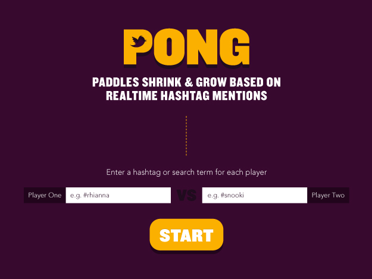
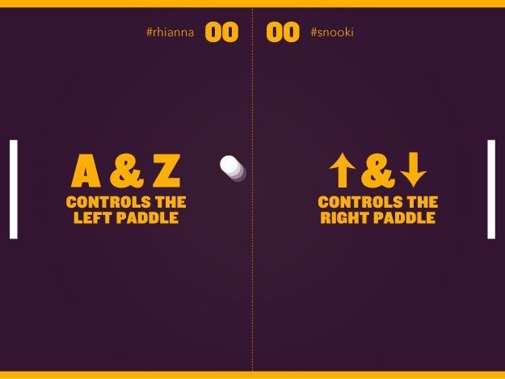
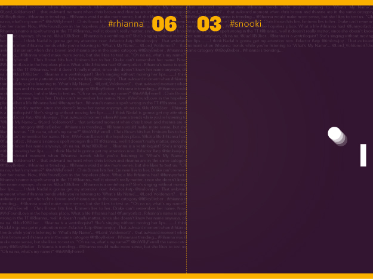
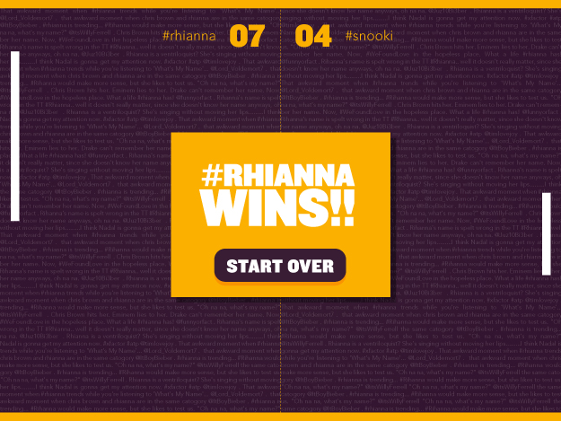

MFA IXD
Twitter Pong
The arcade classic re-imagined for the Twitter era.
Players start by selecting a hashtag. As the game unfolds each paddle changes size based on the frequency of mentions that hashtag receives on Twitter.
This was a collaboration with Tash Wong & Tony Chu for Amit Pitaru‘s Slow Code class. I was responsible for the Visual Identity and User Interface.
Thumbnail photo credit: mbiebusch